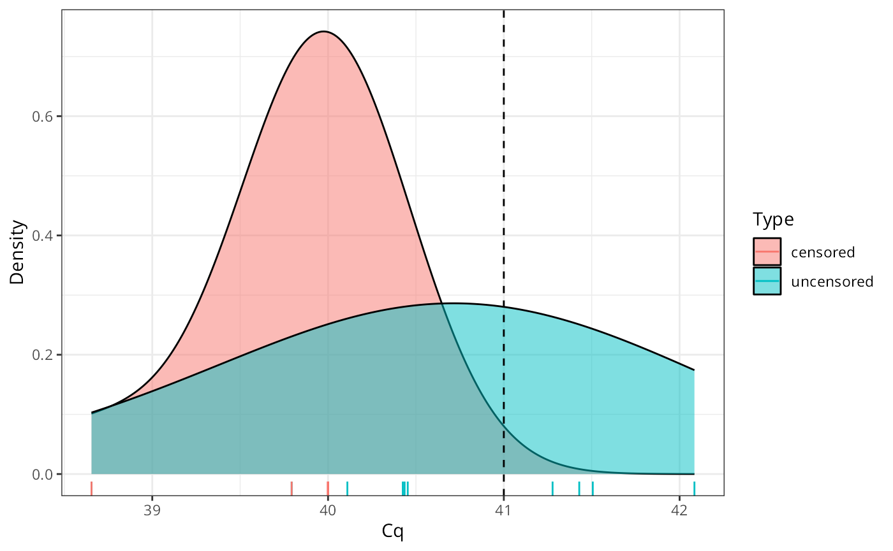
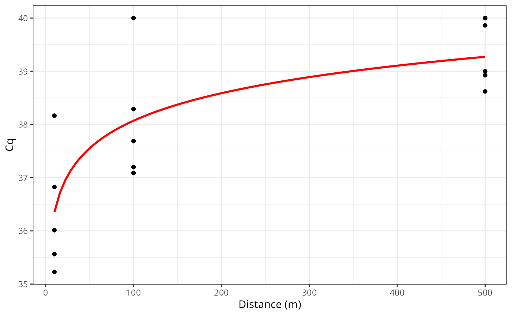
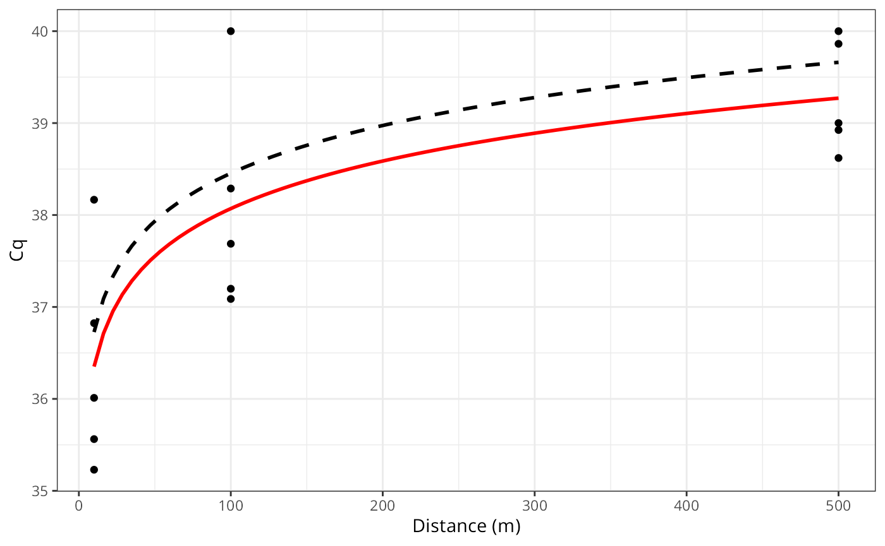

background.RmdThis vignette provides an overview of the driving motivation behind the creation of the artemis package. While not essential to using the package, it might provide a deeper insight into the design, as well as the strengths and weaknesses of the package.
Data from eDNA studies consist of the number of quantification cycles run during qPCR (hereafter Cq values), which is roughly correlated with the concentration of DNA in the sample. Typically, only a set number of cycles are run before the concentration is determined to be below the limit of detection. The number of cycles is typically set to a certain value, e.g. 40 cycles. This mechanism censors the data.
Data censorship occurs when all values below or above a set value are instead reported as that value. This process, if not properly accounted for, can lead to biased estimates.
*An aside: this process is the same whether results are reported in units of Cq, concentration, or number of copies. This is because each of these measure is a linear transformation of the others.**
For example, suppose we measure a known concentration with an equivalent Cq value of 40.5, but we stop our measurements at Cq of 40. Let’s assume our sampling standard deviation is known to be 1 Cq and is normally distributed, and we take 10 samples.
Given the probabilities involved, we know most measured values will land beyond the point of censorship, but some will not. We can simulate this in R as so
# So example is reproducible
set.seed(1234)
n_samples = 10
true_value = 41
sample_stdev = 1
x = rnorm(n_samples, mean = true_value, sd = sample_stdev)
x## [1] 39.79293 41.27743 42.08444 38.65430 41.42912 41.50606 40.42526 40.45337
## [9] 40.43555 40.10996We can see that some of the values are above our cut-off, while other’s are not. Let’s now apply our censorship process,
threshold = 40
x_censored = ifelse(x > threshold, threshold, x)
x_censored## [1] 39.79293 40.00000 40.00000 38.65430 40.00000 40.00000 40.00000 40.00000
## [9] 40.00000 40.00000Remember, we never actually observe the uncensored values. We refer to values that we do not directly observe as ‘latent variables’.
Now, suppose we want to estimate the true value from our observed data, but we don’t take the censorship process into account,
library(ggplot2)
ggplot(data.frame(x = c(x, x_censored),
Type = rep(c("uncensored", "censored"),
each = length(x))),
aes(x = x, fill = Type)) +
geom_density(alpha = 0.5, adjust = 2) +
geom_vline(xintercept = true_value, lty = "dashed") +
labs(x = "Cq", y = "Density") +
theme_bw() +
geom_rug(aes(color = Type))
mean(x_censored)## [1] 39.84472
bias = true_value - mean(x_censored)
bias## [1] 1.155276Now, how does that compare to when we take the censorship into account?
We will skip over the math here, but the basic idea is that we are finding an estimated value for the true mean that is most likely given this collection of observed values.
cens_log_lik = function(x, vals, sd, threshold)
# verbose for demonstration purposes
{
i = vals >= threshold
log_lik = sum(dnorm(vals[!i], x, sd, log = TRUE))
log_lik = log_lik +
pnorm(threshold, x, sd,
lower.tail = FALSE,
log.p = TRUE) * sum(i)
log_lik
}Now we use optimization to find the best value for the true concentration,
ans = optimize(cens_log_lik, vals = x_censored, sd = 1, threshold = 40, interval = c(40, 45), maximum = TRUE)
ans$maximum## [1] 40.76126
true_value - ans$maximum## [1] 0.2387449You will notice this is not perfect - afterall, we are estimating the true value from a sample. As with any statistics, as N -> inf, the estimate will approach the true value. However, the direct mean of the censored values will never converge to the true value - it will be biased no matter the N value.
This simple example should illustrate how bias can be introduced in estimates from censored data. Less obvious might be that the same mechanisms will also bias a linear model in similar ways.
The artemis package was designed around a model that directly accounts for the censorship of the data process in qPCR data.
There are some implications that might not be obvious from the above:
the censorship process is responsible for the bias in the estimate, so when there is no censorship, there is no bias. Practically for users of artemis, this means the extra steps that artemis takes to get an estimate are only necessary when there are censored values. If all the Cq values are below the censorship point, artemis simplifies to a traditional linear model.
Estimating the true value of points beyond the censorship points is highly contengent on the assumed stdev and shape of error (parametric assumption). The more uncertainty in the estimate for stdev, the more uncertainty in these points. However, points at the extreme ends of a linear regression can have high leverage.
library(ggplot2)
n_rep = 5
dist = c(10, 100, 500)
true_cq = 35 + (log(dist) * 0.75)
obs_cq = unlist(lapply(true_cq, rnorm, n = n_rep, sd = 1.5))
obs_cq[obs_cq > 40] = 40
ggplot(,aes(x = rep(dist, each = n_rep), y = obs_cq)) +
geom_point() +
geom_smooth(se = FALSE,
method = "lm", formula = y ~ log(x),
color = "red") +
labs(x = "Distance (m)", y = "Cq") +
theme_bw()
ggplot(,aes(x = rep(dist, each = n_rep), y = obs_cq)) +
geom_point() +
geom_smooth(se = FALSE,
method = "lm", formula = y ~ log(x),
color = "red") +
geom_smooth(aes(x = dist, y = true_cq), se = FALSE,
method = "lm", formula = y ~ log(x),
color = "black", lty = "dashed") +
labs(x = "Distance (m)", y = "Cq") +
theme_bw()